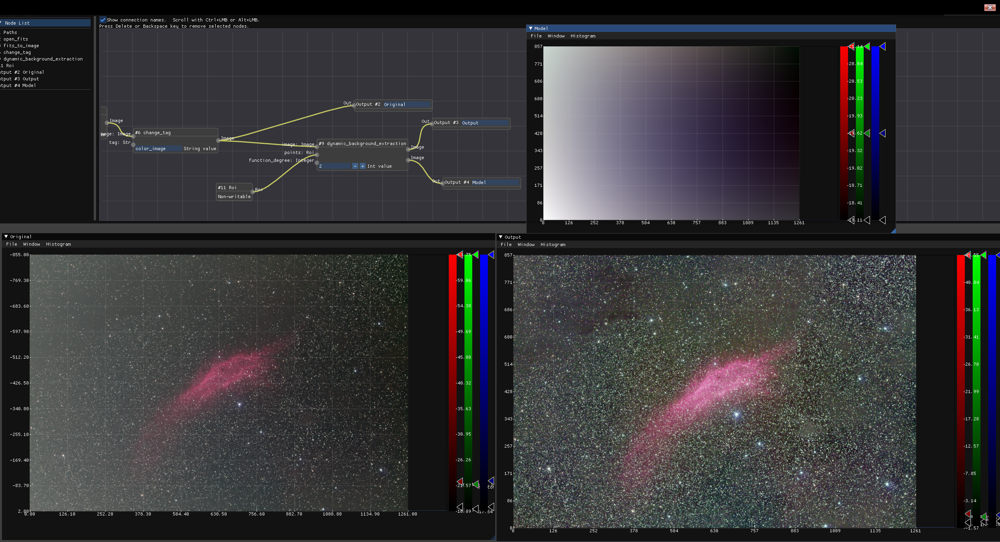

<!DOCTYPE html>
<html>

<head><meta name="generator" content="Hexo 3.8.0">
  <meta charset="utf-8">
  
    <title>
      
        STF, HT, DBE を実装する | 
            ほしよみ社会塵のブログ
    </title>
    <meta name="viewport" content="width=device-width">
    <meta name="description" content="あいさつ久々のブログ更新になります．自作ソフトウェアに PixInsight (以下PI) における STF, HT, DBE 相当の機能を追加しました．">
<meta name="keywords" content="写真,天体写真,画像処理,Rust">
<meta property="og:type" content="article">
<meta property="og:title" content="STF, HT, DBE を実装する">
<meta property="og:url" content="http://dabokun.github.io/2022/01/23/00000060-stf-ht-dbe/index.html">
<meta property="og:site_name" content="ほしよみ社会塵のブログ">
<meta property="og:description" content="あいさつ久々のブログ更新になります．自作ソフトウェアに PixInsight (以下PI) における STF, HT, DBE 相当の機能を追加しました．">
<meta property="og:locale" content="ja">
<meta property="og:image" content="http://dabokun.github.io/2022/01/23/00000060-stf-ht-dbe/card.jpg">
<meta property="og:updated_time" content="2022-01-23T09:10:49.376Z">
<meta name="twitter:card" content="summary_large_image">
<meta name="twitter:title" content="STF, HT, DBE を実装する">
<meta name="twitter:description" content="あいさつ久々のブログ更新になります．自作ソフトウェアに PixInsight (以下PI) における STF, HT, DBE 相当の機能を追加しました．">
<meta name="twitter:image" content="http://dabokun.github.io/2022/01/23/00000060-stf-ht-dbe/card.jpg">
<meta name="twitter:creator" content="@astrodabo">
      
        <link rel="alternative" href="/atom.xml" title="ほしよみ社会塵のブログ" type="application/atom+xml">
        
          
            <link rel="icon" href="/images/favicon.png">
            
              <link rel="stylesheet" href="/css/style.css">
                <!--[if lt IE 9]><script src="//html5shiv.googlecode.com/svn/trunk/html5.js"></script><![endif]-->
                
                  <script data-ad-client="ca-pub-1350688970555904" async src="https://pagead2.googlesyndication.com/pagead/js/adsbygoogle.js"></script>
</head></html>
<body>
  <div id="container">
    <div class="mobile-nav-panel">
	<i class="icon-reorder icon-large"></i>
</div>
<header id="header">
	<h1 class="blog-title">
		<a href="/">
			ほしよみ社会塵のブログ
		</a>
	</h1>
	<nav class="nav">
		<ul>
			
				<li><a href="/">
						Home
					</a></li>
				
				<li><a href="/categories">
						Categories
					</a></li>
				
				<li><a href="/tags">
						Tags
					</a></li>
				
				<li><a href="/archives">
						Archives
					</a></li>
				
				<li><a href="/about">
						About
					</a></li>
				
				<li><a href="/work">
						Work
					</a></li>
				
					<li><a id="nav-search-btn" class="nav-icon" title="Search"></a></li>
					<li><a href="https://github.com/dabokun"></a>
					</li>
					<li><a href="https://twitter.com/astrodabo"></a></li>
					
						<li><a href="/atom.xml" id="nav-rss-link" class="nav-icon" title="RSS Feed"></a>
						</li>
						
		</ul>
	</nav>
	<div id="search-form-wrap">
		<form action="//google.com/search" method="get" accept-charset="UTF-8" class="search-form"><input type="search" name="q" class="search-form-input" placeholder="Search"><button type="submit" class="search-form-submit">&#xF002;</button><input type="hidden" name="sitesearch" value="http://dabokun.github.io"></form>
	</div>
</header>

    <div id="main">
      <article id="post-00000060-stf-ht-dbe" class="post">
	<footer class="entry-meta-header">
		<span class="meta-elements date">
			<a href="/2022/01/23/00000060-stf-ht-dbe/" class="article-date">
  <time datetime="2022-01-23T07:46:17.000Z" itemprop="datePublished">2022-01-23</time>
</a>
		</span>
		<span class="meta-elements author">astr0dab0</span>
		<div class="commentscount">
			
			<a href="http://dabokun.github.io/2022/01/23/00000060-stf-ht-dbe/#disqus_thread" class="article-comment-link">Comments</a>
			
		</div>
	</footer>
	
	<header class="entry-header">
		
  
    <h1 class="article-title entry-title" itemprop="name">
      STF, HT, DBE を実装する
    </h1>
  

	</header>
	<div class="entry-content">
		
		
		<div id="toc" class="toc-article">
			<p class="toc-title">目次</p>
			<ol class="toc"><li class="toc-item toc-level-3"><a class="toc-link" href="#あいさつ"><span class="toc-number">1.</span> <span class="toc-text">あいさつ</span></a></li><li class="toc-item toc-level-3"><a class="toc-link" href="#STF"><span class="toc-number">2.</span> <span class="toc-text">STF</span></a></li><li class="toc-item toc-level-3"><a class="toc-link" href="#HT"><span class="toc-number">3.</span> <span class="toc-text">HT</span></a></li><li class="toc-item toc-level-3"><a class="toc-link" href="#DBE"><span class="toc-number">4.</span> <span class="toc-text">DBE</span></a></li><li class="toc-item toc-level-3"><a class="toc-link" href="#まとめ"><span class="toc-number">5.</span> <span class="toc-text">まとめ</span></a></li></ol>
		</div>
		
		<script type="text/javascript" async src="https://cdn.mathjax.org/mathjax/latest/MathJax.js?config=TeX-MML-AM_CHTML"></script>


<h3 id="あいさつ"><a href="#あいさつ" class="headerlink" title="あいさつ"></a>あいさつ</h3><p>久々のブログ更新になります．<br>自作ソフトウェアに PixInsight (以下PI) における STF, HT, DBE 相当の機能を追加しました．</p>
<a id="more"></a>
<h3 id="STF"><a href="#STF" class="headerlink" title="STF"></a>STF</h3><p>ScreenTransferFunction（STF）は，PI をお使いの方であればお馴染みかと思います．<br>画像のデータではなく，伝達関数（Transfer Function，データを色や透明度などの(主に)視覚情報へ伝達するための関数）を変更することで，画像の色味などを変えるプロセスです．<br>本来伝達関数は大変奥の深い概念ではありますが，普通の RGB 画像やモノクロ画像でやることは基本的にシャドウ，中間調，ハイライトの3つのパラメタ値を変更し，それら値を元にできる Midtone Transfer Function (MTF) を変更することになります．<br>MTF は <a href="https://pixinsight.com/doc/tools/HistogramTransformation/HistogramTransformation.html" target="_blank" rel="noopener">PI のドキュメント</a>や<a href="https://www.youtube.com/watch?time_continue=606&amp;v=bugdgOojxJc&amp;feature=emb_logo" target="_blank" rel="noopener">蒼月城さんの解説動画</a>にあるように，データの値が中間調と等しい時にちょうど0.5となるようにいい感じにストレッチする関数で，次のような式で計算されます．</p>
<script type="math/tex; mode=display">\rm{MTF}(\it{x}\rm{;} \it{m}\rm{)} = \begin{cases}
0 \hspace{40px} (x = 0) \\
\frac{1}{2} \hspace{40px} (x = m)\\
1 \hspace{40px} (x = 1)\\
\frac{(m-1)x}{(2m - 1)x - m} \hspace{40px} (\rm{otherwise})
\end{cases}</script><p><a href="https://pixinsight.com/doc/tools/HistogramTransformation/HistogramTransformation.html" target="_blank" rel="noopener">PI のドキュメント</a>より</p>
<p>というわけで，現在のソフトに RGB それぞれのカラーバーを追加，中間調の変更機能も追加して，MTF で変換するようにしました．<br>また，PI の STF プロセスにはいい感じに画像を見やすくオートストレッチする機能もあります．中で何をやっているのかは蒼月城さんが Twitter に書いてくれていました．<br><div class="twitter-wrapper"><blockquote class="twitter-tweet"><a href="https://twitter.com/astroimageproc/status/1472872287104016385" target="_blank" rel="noopener"></a></blockquote></div><script async defer src="//platform.twitter.com/widgets.js" charset="utf-8"></script><br>これと，<a href="https://gitlab.com/pixinsight/PCL/-/blob/master/src/modules/processes/IntensityTransformations/ScreenTransferFunctionInterface.cpp#L1068" target="_blank" rel="noopener">PCL のソースコード</a>を参考にすれば，ぶっちゃけ実装することは可能になります．</p>
<p><video src="01.mp4" width="720" height="720" controls></video><br>できました．M42 が一気に見やすくなったところは，オートストレッチをかけているところになります．</p>
<h3 id="HT"><a href="#HT" class="headerlink" title="HT"></a>HT</h3><p>Histogram Transformation（HT） は STF と密接に関係しています．STF では伝達関数を変更しましたが，HT では STF での結果になるようにデータの方を変更します．基本的な考え方は STF での伝達関数の適用と同じと言っていいです．<br>PI ではもう少しパラメタがありますが，今回はそれらは無視して，RGB チャネルそれぞれのシャドウ，中間調，ハイライトの合計9つのパラメタ値をもとにデータを変更します．</p>
<p><video src="02.mp4" width="720" height="720" controls></video><br>完成形はこのようになります．左下のウィンドウでは先ほどと同様に STF で伝達関数を変更するのみですが，右下のウィンドウでは実際のデータのほうが STF の変更に沿うように変換されています．右下のウィンドウのヒストグラムがちゃんと変更されているところに注目していただければ，データが変わっているということがおわかりかと思います．ユーザは9つのパラメタ値と連動する変数を上のビジュアルプログラム上に追加し，それを HT のノードに渡すようにすることで，このような処理を実現します．<br>STF と HT については変更箇所が多いのでソースコードを載せることはしません．</p>
<h3 id="DBE"><a href="#DBE" class="headerlink" title="DBE"></a>DBE</h3><p>DynamicBackgroundEstimation (DBE) は STF や HT とは毛色が違うものの，よく使われるプロセスです．以前 <a href="https://twitter.com/Mazic_tell_Arts" target="_blank" rel="noopener">takashi さん</a>が <a href="https://github.com/takashi-154/DynamicBackgroundEstimation" target="_blank" rel="noopener">Python で DBE するプログラム</a>を作られていたので，似た感じの処理ができるものを自分も作ることにしました．<br>本質的にやることは比較的単純で，</p>
<ol>
<li>ユーザ指定の点群から付近の20*20くらいのボックスを切り出してボックス内の中央値を計算する</li>
<li>中央値に合うように画像を曲面フィッティングしてバックグラウンドモデルとする</li>
<li>背景を元画像から引く（または割る）</li>
</ol>
<p>となります．<br>フィッティングはシンプルに最小二乗法を使っています．<a href="https://inak-eng.jp/2020/06/04/%E6%9C%80%E5%B0%8F%E4%BA%8C%E4%B9%97%E6%B3%95%E3%81%AB%E3%82%88%E3%82%8B2%E6%AC%A1%E5%85%83%E3%83%87%E3%83%BC%E3%82%BF%E3%81%AE%E6%9B%B2%E9%9D%A2%E8%BF%91%E4%BC%BC/" target="_blank" rel="noopener">こちらのブログ</a>が詳しいです．<br>以下のようなコードで実装しました．<br><figure class="highlight rust"><table><tr><td class="gutter"><pre><span class="line">1</span><br><span class="line">2</span><br><span class="line">3</span><br><span class="line">4</span><br><span class="line">5</span><br><span class="line">6</span><br><span class="line">7</span><br><span class="line">8</span><br><span class="line">9</span><br><span class="line">10</span><br><span class="line">11</span><br><span class="line">12</span><br><span class="line">13</span><br><span class="line">14</span><br><span class="line">15</span><br><span class="line">16</span><br><span class="line">17</span><br><span class="line">18</span><br><span class="line">19</span><br><span class="line">20</span><br><span class="line">21</span><br><span class="line">22</span><br><span class="line">23</span><br><span class="line">24</span><br><span class="line">25</span><br><span class="line">26</span><br><span class="line">27</span><br><span class="line">28</span><br><span class="line">29</span><br><span class="line">30</span><br><span class="line">31</span><br><span class="line">32</span><br><span class="line">33</span><br><span class="line">34</span><br><span class="line">35</span><br><span class="line">36</span><br><span class="line">37</span><br><span class="line">38</span><br><span class="line">39</span><br><span class="line">40</span><br><span class="line">41</span><br><span class="line">42</span><br><span class="line">43</span><br><span class="line">44</span><br><span class="line">45</span><br><span class="line">46</span><br><span class="line">47</span><br><span class="line">48</span><br><span class="line">49</span><br><span class="line">50</span><br><span class="line">51</span><br><span class="line">52</span><br><span class="line">53</span><br><span class="line">54</span><br><span class="line">55</span><br><span class="line">56</span><br><span class="line">57</span><br><span class="line">58</span><br><span class="line">59</span><br><span class="line">60</span><br><span class="line">61</span><br><span class="line">62</span><br><span class="line">63</span><br><span class="line">64</span><br><span class="line">65</span><br><span class="line">66</span><br><span class="line">67</span><br><span class="line">68</span><br><span class="line">69</span><br><span class="line">70</span><br><span class="line">71</span><br><span class="line">72</span><br><span class="line">73</span><br><span class="line">74</span><br><span class="line">75</span><br><span class="line">76</span><br><span class="line">77</span><br><span class="line">78</span><br><span class="line">79</span><br><span class="line">80</span><br><span class="line">81</span><br><span class="line">82</span><br><span class="line">83</span><br><span class="line">84</span><br><span class="line">85</span><br><span class="line">86</span><br><span class="line">87</span><br><span class="line">88</span><br><span class="line">89</span><br><span class="line">90</span><br><span class="line">91</span><br><span class="line">92</span><br><span class="line">93</span><br><span class="line">94</span><br><span class="line">95</span><br><span class="line">96</span><br><span class="line">97</span><br><span class="line">98</span><br><span class="line">99</span><br><span class="line">100</span><br><span class="line">101</span><br><span class="line">102</span><br><span class="line">103</span><br><span class="line">104</span><br></pre></td><td class="code"><pre><span class="line">dynamic_background_extraction&lt;IOValue, IOErr&gt;(</span><br><span class="line">    image: Image, points: Roi,</span><br><span class="line">    function_degree: Integer = <span class="number">1</span></span><br><span class="line">) -&gt; Image, Image &#123;</span><br><span class="line">    <span class="keyword">let</span> tag = image.tag();</span><br><span class="line">    <span class="keyword">let</span> dim = image.scalar().dim();</span><br><span class="line">    <span class="keyword">let</span> dim = dim.as_array_view();</span><br><span class="line">    <span class="keyword">let</span> func_plus_one = (*function_degree + <span class="number">1</span>) <span class="keyword">as</span> <span class="built_in">usize</span>;</span><br><span class="line">    <span class="keyword">let</span> params_right_num = func_plus_one * func_plus_one;</span><br><span class="line">    <span class="keyword">let</span> <span class="keyword">mut</span> params_right = <span class="built_in">Vec</span>::&lt;<span class="built_in">f32</span>&gt;::with_capacity(params_right_num * dim[<span class="number">0</span>]);</span><br><span class="line">    params_right.resize(params_right_num * dim[<span class="number">0</span>], <span class="number">0.0</span>);</span><br><span class="line">    <span class="keyword">let</span> <span class="keyword">mut</span> params_right = Array::from_vec(params_right).into_shape(</span><br><span class="line">      (dim[<span class="number">0</span>], func_plus_one, func_plus_one)).unwrap();</span><br><span class="line">    <span class="keyword">let</span> params_left_num = params_right_num * params_right_num;</span><br><span class="line">    <span class="keyword">let</span> <span class="keyword">mut</span> params_left = <span class="built_in">Vec</span>::&lt;<span class="built_in">f32</span>&gt;::with_capacity(params_left_num * dim[<span class="number">0</span>]);</span><br><span class="line">    params_left.resize(params_left_num * dim[<span class="number">0</span>], <span class="number">0.0</span>);</span><br><span class="line">    <span class="keyword">let</span> <span class="keyword">mut</span> params_left = Array::from_vec(params_left).into_shape(</span><br><span class="line">      (dim[<span class="number">0</span>], func_plus_one, func_plus_one, func_plus_one, func_plus_one)).unwrap();</span><br><span class="line">    <span class="keyword">let</span> <span class="keyword">mut</span> model = image.scalar().clone();</span><br><span class="line">    <span class="keyword">let</span> <span class="keyword">mut</span> out = image.scalar().clone();</span><br><span class="line">    <span class="keyword">for</span> i <span class="keyword">in</span> <span class="number">0</span>..dim[<span class="number">0</span>] &#123;</span><br><span class="line">        <span class="keyword">for</span> takes_y <span class="keyword">in</span> <span class="number">0</span>..func_plus_one &#123;</span><br><span class="line">            <span class="keyword">for</span> takes_x <span class="keyword">in</span> <span class="number">0</span>..func_plus_one &#123;</span><br><span class="line">                <span class="keyword">for</span> inner_takes_y <span class="keyword">in</span> <span class="number">0</span>..func_plus_one &#123;</span><br><span class="line">                    <span class="keyword">for</span> inner_takes_x <span class="keyword">in</span> <span class="number">0</span>..func_plus_one &#123;</span><br><span class="line">                        <span class="keyword">let</span> data = points.filterx(image.scalar().slice(s![i, .., ..]));</span><br><span class="line">                        <span class="keyword">for</span> ((x, y), _) <span class="keyword">in</span> data &#123;</span><br><span class="line">                            <span class="keyword">let</span> x = x <span class="keyword">as</span> <span class="built_in">f32</span> / dim[<span class="number">2</span>] <span class="keyword">as</span> <span class="built_in">f32</span>;</span><br><span class="line">                            <span class="keyword">let</span> y = y <span class="keyword">as</span> <span class="built_in">f32</span> / dim[<span class="number">1</span>] <span class="keyword">as</span> <span class="built_in">f32</span>;</span><br><span class="line">                            params_left[[i, takes_y, takes_x, </span><br><span class="line">                              inner_takes_y, inner_takes_x]] += </span><br><span class="line">                              <span class="number">1.0</span> </span><br><span class="line">                              * (x <span class="keyword">as</span> <span class="built_in">f32</span>).powf((takes_x + inner_takes_x) <span class="keyword">as</span> <span class="built_in">f32</span>)</span><br><span class="line">                              * (y <span class="keyword">as</span> <span class="built_in">f32</span>).powf((takes_y + inner_takes_y) <span class="keyword">as</span> <span class="built_in">f32</span>);</span><br><span class="line">                        &#125;</span><br><span class="line">                    &#125;</span><br><span class="line">                &#125;</span><br><span class="line">                <span class="keyword">let</span> data = points.filterx(image.scalar().slice(s![i, .., ..]));</span><br><span class="line">                <span class="keyword">for</span> ((x, y), _) <span class="keyword">in</span> data &#123;</span><br><span class="line">                    <span class="keyword">let</span> <span class="keyword">mut</span> boxdata = <span class="built_in">Vec</span>::new();</span><br><span class="line">                    <span class="keyword">for</span> xx <span class="keyword">in</span> (x-<span class="number">10</span>).max(<span class="number">0</span>)..(x+<span class="number">10</span>).min(dim[<span class="number">2</span>]) &#123;</span><br><span class="line">                        <span class="keyword">for</span> yy <span class="keyword">in</span> (y-<span class="number">10</span>).max(<span class="number">0</span>)..(y+<span class="number">10</span>).min(dim[<span class="number">1</span>]) &#123;</span><br><span class="line">                            boxdata.push(model[[i, yy, xx]]);</span><br><span class="line">                        &#125;</span><br><span class="line">                    &#125;</span><br><span class="line">                    boxdata.sort_by(|a, b| a.partial_cmp(b).unwrap());</span><br><span class="line">                    <span class="keyword">let</span> mid = boxdata.len() / <span class="number">2</span>;</span><br><span class="line">                    <span class="keyword">let</span> med = <span class="keyword">if</span> boxdata.len() % <span class="number">2</span> == <span class="number">0</span> &#123;</span><br><span class="line">                        (boxdata[mid] + boxdata[mid - <span class="number">1</span>]) / <span class="number">2.0</span></span><br><span class="line">                    &#125; <span class="keyword">else</span> &#123;</span><br><span class="line">                        boxdata[mid]</span><br><span class="line">                    &#125;;</span><br><span class="line">                    boxdata.clear();</span><br><span class="line">                    <span class="keyword">let</span> x = x <span class="keyword">as</span> <span class="built_in">f32</span> / dim[<span class="number">2</span>] <span class="keyword">as</span> <span class="built_in">f32</span>;</span><br><span class="line">                    <span class="keyword">let</span> y = y <span class="keyword">as</span> <span class="built_in">f32</span> / dim[<span class="number">1</span>] <span class="keyword">as</span> <span class="built_in">f32</span>;</span><br><span class="line">                    params_right[[i, takes_y, takes_x]] += </span><br><span class="line">                      med </span><br><span class="line">                      * (x <span class="keyword">as</span> <span class="built_in">f32</span>).powf(takes_x <span class="keyword">as</span> <span class="built_in">f32</span>)</span><br><span class="line">                      * (y <span class="keyword">as</span> <span class="built_in">f32</span>).powf(takes_y <span class="keyword">as</span> <span class="built_in">f32</span>);</span><br><span class="line">                &#125;</span><br><span class="line">            &#125;</span><br><span class="line">        &#125;</span><br><span class="line">        <span class="keyword">let</span> params_left_vec = params_left.index_axis(Axis(<span class="number">0</span>), i)</span><br><span class="line">                                          .to_owned().into_raw_vec();</span><br><span class="line">        <span class="keyword">let</span> params_right_vec = params_right.index_axis(Axis(<span class="number">0</span>), i)</span><br><span class="line">                                          .to_owned().into_raw_vec();</span><br><span class="line">        <span class="keyword">let</span> a = DMatrix::from_vec(params_right_num, params_right_num, params_left_vec);</span><br><span class="line">        <span class="keyword">let</span> b = DVector::from(params_right_vec.clone());</span><br><span class="line">        <span class="keyword">let</span> decomp = a.lu();</span><br><span class="line">        <span class="keyword">let</span> x = decomp.solve(&amp;b);</span><br><span class="line">        <span class="keyword">let</span> <span class="keyword">mut</span> sol = DVector::from(params_right_vec);</span><br><span class="line">        <span class="keyword">match</span> x &#123;</span><br><span class="line">            <span class="literal">Some</span>(vector) =&gt; sol = vector,</span><br><span class="line">            <span class="literal">None</span> =&gt; &#123;</span><br><span class="line">                <span class="built_in">println!</span>(<span class="string">"failure"</span>);</span><br><span class="line">            &#125;,</span><br><span class="line">        &#125;;</span><br><span class="line">        <span class="keyword">for</span> y <span class="keyword">in</span> <span class="number">0</span>..dim[<span class="number">1</span>] &#123;</span><br><span class="line">            <span class="keyword">for</span> x <span class="keyword">in</span> <span class="number">0</span>..dim[<span class="number">2</span>] &#123;</span><br><span class="line">                <span class="keyword">let</span> xx = x <span class="keyword">as</span> <span class="built_in">f32</span> / dim[<span class="number">2</span>] <span class="keyword">as</span> <span class="built_in">f32</span>;</span><br><span class="line">                <span class="keyword">let</span> yy = y <span class="keyword">as</span> <span class="built_in">f32</span> / dim[<span class="number">1</span>] <span class="keyword">as</span> <span class="built_in">f32</span>;</span><br><span class="line">                model[[i, y, x]] = <span class="number">0.0</span>;</span><br><span class="line">                <span class="keyword">for</span> takes_x <span class="keyword">in</span> <span class="number">0</span>..func_plus_one &#123;</span><br><span class="line">                    <span class="keyword">for</span> takes_y <span class="keyword">in</span> <span class="number">0</span>..func_plus_one &#123;</span><br><span class="line">                        model[[i, y, x]] += </span><br><span class="line">                          sol[takes_y * func_plus_one + takes_x]</span><br><span class="line">                          * (xx.powf(takes_x <span class="keyword">as</span> <span class="built_in">f32</span>))</span><br><span class="line">                          * yy.powf(takes_y <span class="keyword">as</span> <span class="built_in">f32</span>);</span><br><span class="line">                    &#125;</span><br><span class="line">                &#125;</span><br><span class="line">                out[[i, y, x]] -= model[[i, y, x]];</span><br><span class="line">            &#125;</span><br><span class="line">        &#125;</span><br><span class="line">    &#125;</span><br><span class="line">                    </span><br><span class="line">    <span class="built_in">vec!</span>[<span class="literal">Ok</span>(IOValue::Image(WcsArray::from_array_and_tag(Dimensioned::new(</span><br><span class="line">        out,</span><br><span class="line">        Unit::<span class="literal">None</span>,</span><br><span class="line">    ), tag.clone()))), </span><br><span class="line">        <span class="literal">Ok</span>(IOValue::Image(WcsArray::from_array_and_tag(Dimensioned::new(</span><br><span class="line">        model,</span><br><span class="line">        Unit::<span class="literal">None</span>,</span><br><span class="line">    ), tag.clone())))]</span><br><span class="line">&#125;</span><br></pre></td></tr></table></figure></p>
<p>実際に動かしてみると以下のようになります．</p>
<p></p>
<p>画像は <a href="https://github.com/takashi-154/DynamicBackgroundEstimation/blob/8720542afcc79cf825d3869f4d1c750d3a3215f1/image.fts" target="_blank" rel="noopener">takashi さんのデータ</a>を無許可でお借りしています．ごめんなさいm(_ _)m（Github で MIT ライセンスで公開されているデータなのできっと許してくれるはず）まだビジュアルプログラムのノードにオーサーシップを明示することはしていないのですが，その暁には彼の名前は必ず含めるつもりです．他にもテスト用の、被りがあるデータを提供してくださる方を募集しております。^^<br>上の例では点群は <a href="https://github.com/takashi-154/DynamicBackgroundEstimation/blob/5a59a2e52de35ae9c99caf73b484a0c82f791bbf/pointlist.npy" target="_blank" rel="noopener">takashi さんのもの</a>と同様で，二次曲面でフィッティングしています．左下が元画像，右上が推定されたバックグラウンドモデル，右下がモデルを引き算した結果です．元画像よりも強調していますが，明るさの勾配は除去できているのではないでしょうか．</p>
<h3 id="まとめ"><a href="#まとめ" class="headerlink" title="まとめ"></a>まとめ</h3><p>さて，今回は後処理における三種類のプロセスを作ってみました．まだまだデータを仕上げるには必要なプロセスがたくさんありますが，その中身についてちまちま勉強して追実装するのはなかなか楽しいので今後も続けていきたいと思います．</p>

		
	</div>
	<footer class="article-footer">
		<a href="https://twitter.com/intent/tweet?text=STF,%20HT,%20DBE%20%E3%82%92%E5%AE%9F%E8%A3%85%E3%81%99%E3%82%8B｜%E3%81%BB%E3%81%97%E3%82%88%E3%81%BF%E7%A4%BE%E4%BC%9A%E5%A1%B5%E3%81%AE%E3%83%96%E3%83%AD%E3%82%B0&url=http://dabokun.github.io/2022/01/23/00000060-stf-ht-dbe/" class="twitter-share-button" target="_blank" title="Twitter"></a>
		<script async src="https://platform.twitter.com/widgets.js" charset="utf-8"></script>

		<div id="fb-root"></div>
		<script async defer crossorigin="anonymous" src="https://connect.facebook.net/ja_JP/sdk.js#xfbml=1&version=v4.0"></script>
		<div class="fb-share-button" data-href="http://dabokun.github.io/2022/01/23/00000060-stf-ht-dbe/" data-layout="button_count" data-size="small"><a target="_blank" href="https://www.facebook.com/sharer/sharer.php?u=https%3A%2F%2Fdabokun.github.io%2F&amp;src=sdkpreparse" class="fb-xfbml-parse-ignore">シェア</a></div>
	</footer>
	<footer class="entry-footer">
		<div class="entry-meta-footer">
			<span class="category">
				
  <div class="article-category">
    <a class="article-category-link" href="/categories/processing/">画像処理</a>
  </div>

			</span>
			<span class=" tags">
				
  <ul class="article-tag-list"><li class="article-tag-list-item"><a class="article-tag-list-link" href="/tags/rust/">Rust</a></li><li class="article-tag-list-item"><a class="article-tag-list-link" href="/tags/photography/">写真</a></li><li class="article-tag-list-item"><a class="article-tag-list-link" href="/tags/astrophotography/">天体写真</a></li><li class="article-tag-list-item"><a class="article-tag-list-link" href="/tags/processing/">画像処理</a></li></ul>

			</span>
		</div>
	</footer>
	
	
<nav id="article-nav">
  
    <a href="/2022/02/05/00000061-pjsr-coding-tips/" id="article-nav-newer" class="article-nav-link-wrap">
      <strong class="article-nav-caption">Newer</strong>
      <div class="article-nav-title">
        
          PJSR (PixInsight Script) コーディングTips
        
      </div>
    </a>
  
  
    <a href="/2021/11/10/00000059-toa130ns/" id="article-nav-older" class="article-nav-link-wrap">
      <strong class="article-nav-caption">Older</strong>
      <div class="article-nav-title">
        
          【やってしまった！】TOA-130NS 導入の裏？話
        
      </div>
    </a>
  
</nav>

	
</article>


<section id="comments">
	<div id="disqus_thread">
		<noscript>Please enable JavaScript to view the <a href="//disqus.com/?ref_noscript">comments powered by
				Disqus.</a></noscript>
	</div>
</section>

    </div>
    <div class="mb-search">
  <form action="//google.com/search" method="get" accept-charset="utf-8">
    <input type="search" name="q" results="0" placeholder="Search">
    <input type="hidden" name="q" value="site:dabokun.github.io">
  </form>
</div>
<footer id="footer">
	<h1 class="footer-blog-title">
		<a href="/">ほしよみ社会塵のブログ</a>
	</h1>
	<span class="copyright">
		&copy; 2024 astr0dab0<br>
		Modify from <a href="http://sanographix.github.io/tumblr/apollo/" target="_blank">Apollo</a> theme, designed by <a href="http://www.sanographix.net/" target="_blank">SANOGRAPHIX.NET</a><br>
		Powered by <a href="http://hexo.io/" target="_blank">Hexo</a>
	</span>
</footer>
    
<script>
  var disqus_shortname = 'astr0dab0';
  
  var disqus_url = 'http://dabokun.github.io/2022/01/23/00000060-stf-ht-dbe/';
  
  (function(){
    var dsq = document.createElement('script');
    dsq.type = 'text/javascript';
    dsq.async = true;
    dsq.src = '//go.disqus.com/embed.js';
    (document.getElementsByTagName('head')[0] || document.getElementsByTagName('body')[0]).appendChild(dsq);
  })();
</script>


<script src="//ajax.googleapis.com/ajax/libs/jquery/2.0.3/jquery.min.js"></script>


<link rel="stylesheet" href="/fancybox/jquery.fancybox.css" media="screen" type="text/css">
<script src="/fancybox/jquery.fancybox.pack.js"></script>


<script src="/js/script.js"></script>
  </div>
</body>
</html>